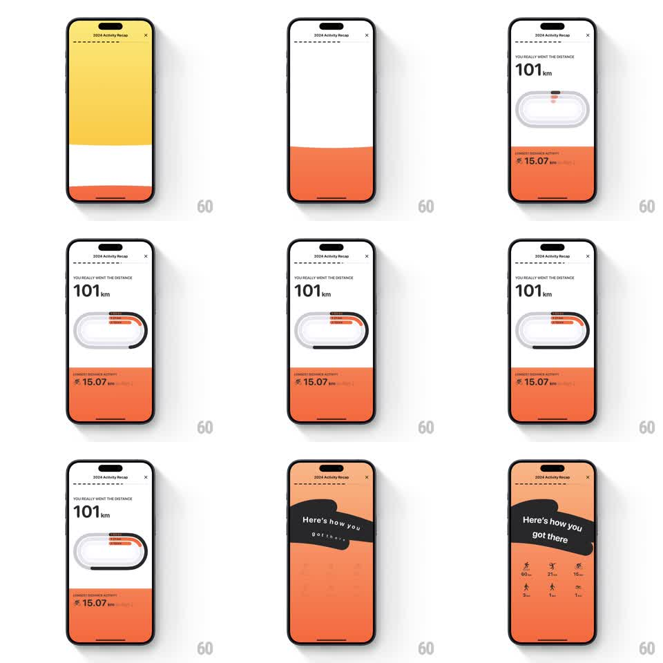

Media
Frame-by-frame

Rebuild this animation 1:1: Gentler Streak's distance recap - a running-track graphic draws its lanes sequentially while the total ticks up, and a sticker-style stat grid slides in to close the story.

Rebuild this animation 1:1: Gentler Streak's distance recap - a running-track graphic draws its lanes sequentially while the total ticks up, and a sticker-style stat grid slides in to close the story. ## Integration Integration: stack-agnostic spec - springs given as stiffness/damping, timed motions as duration + curve; map every value to your framework and animation library of choice. ## Scene Recap screen: "YOU REALLY WENT THE DISTANCE" kicker, a huge "101 km", a stadium-track oval graphic with lane markings, an orange lower band with "LONGEST DISTANCE ACTIVITY - 15.07 km", then a peach screen with a "Here's how you got there" sticker banner and a grid of per-activity distances. ## Motion spec Pattern: sequential track draw with sticker reveal, ~2.5s. - The background bands slide in (white top, orange bottom, 300ms each) and the kicker and total fade up (300ms). - The track oval draws itself lane by lane: each lane's stroke reveals around the loop (400ms per lane, ease-in-out, 120ms stagger), the runner dot riding the final lane. - The orange band's stat line fades in as the last lane completes (250ms). - Transition: a black "Here's how you got there" sticker peels in from the left edge (spring stiffness 300 damping 18, slight rotation), the background crossfading to peach. - The activity grid pops in cell by cell (scale 0.6 to 1, stiffness 380 damping 15, 60ms stagger, row by row). ## Calibration - Lanes draw in order from outermost inward - the stagger is the rhythm of the piece. - The sticker tilt (about -6deg) is part of the charm; do not straighten it. ## Reduced motion Elements fade in assembled. ## Don't miss - The runner dot travels the track as the lanes draw - it is a participant, not a static icon. - The grid's numbers are the per-activity distances; they pop, they do not count.